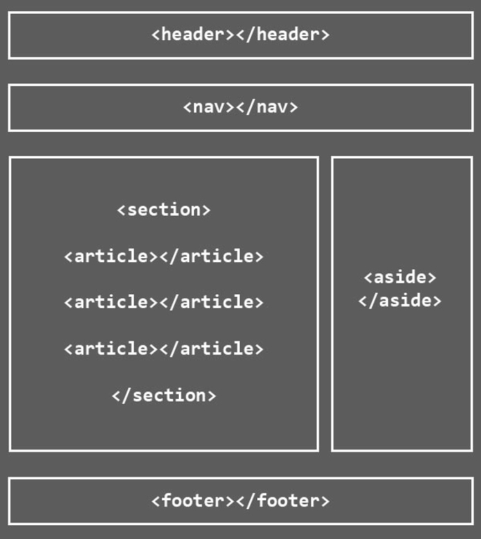

Modelo cliente-servidor
Una página web está compuesta por la página web en sí y todas las partes que te permiten llegar a ella. En el servidor se almacenan los archivos. El dominio es una "máscara" que utilizamos que es más fácil de recordar que la dirección IP del sitio (ej coderhouse.com en vez de 162.243.9.191)
Internet es una gran colección de computadoras conectadas. Al alquilar un hosting, alquilas espacio en una computadora para subir tu información. El hosting está prendido 24 horas y tiene disponible tu información para que otros accedan a ella a través de una IP. Después es necesario adquirir un dominio que es la "máscara" que permite acceder al sitio fácilmente para humanos.
HTML
Es un lenguaje de marcado (de etiquetas) para crear documentos para web. Se encarga solamente de lo estructural, no del diseño.
Utiliza una etiqueta de inicio y cierre (en la mayoría de los casos). Todo lo que se encuentra dentro de las etiquetas es su contenido
Otros lenguajes
- CSS (Cascading Style Sheets): aplica el formato visual y estructural de la página
- JavaScript: permite hablar con servidores desde la página web. También permite crear efectos-web (modales, drag and drop, validación de formularios). Añade más dinamismo a la web
- PHP: permite crear sitios dinámicos (subir archivos, enviar mails, conexión a base de datos, registro y login de usuarios)
Herramientas de desarrollo
Usar programas que escriba texto plano (Sublime Text, Visual Studio Code, Atom). No sirve Word porque agrega "metadatos", no escribe texto plano
Convenio de archivos
Reglas para ponerle nombre a los archivos:
- No usar espacios, acentos, eñes. Si son varias palabras usar guiones "-" o "_". Pero si se usan guiones, siempre usar el mismo tipo
- Deben escribirse en minúsculas
- Deben tener la extensión html. Tener cuidado con la doble extensión de archivos (archivo.html.txt)
- El documento predeterminado es el que se muestra cuando ingresamos a la web y no se especifica un archivo. El nombre de este archivo por convención es index.html
Atributos de las etiquetas
Todas las etiquetas pueden tener atributos. Solamente la que inicia puede tener atributos. Puede haber más de un atributo, separado entre espacios entre sí. El valor se escribe entre comillas.
VER COMO AGREGAR CODIGO Contenido
Anidar etiquetas
Se puede anidar una etiqueta dentro de otra. Lo más importante es recordar que siempre se cierran en orden inverso a la apertura.
Comentarios HTML
Es parte del código que el navegador no va a mostrar.
Estructura básica
Esta estructura de elementos debe insertarse siempre en cada documento. Ambas deben estar dentro de la etiqueta principal html
- head: es la parte privada del documento, sirve de espacio de comunicación entre el sitio web y el navegador. Se incluyen las etiquetas de título, las etiquetas que importan archivos CSS y JS, las etiquetas meta
- body: contiene el contenido propiamente dicho del sitio
Dentro de head:
- title: define el título de la página, se visualiza en la solapa del navegador
- meta: se utiliza para añadir información sobre la página (metadatos). También define el idioma y la codificación de la página
Docktype
Al momento de escribir un sitio HTML, lo primero que tenemos que definir es el DOCKTYPE. Es el que declara el tipo de documento, sirve para indicar que el documento está escrito siguendo la estructura de un DTD concreto.
Un DTD es la definición del tipo de documento y determina la estructura que debe tener el documento. Usamos el DOCKTYPE al inicio de la página para informar qué DTD usamos
Tipos de etiquetas
Todas las etiquetas que van dentro del body se dividen en dos grupos:
- Elementos de bloque: son los que (sin ser modificados por CSS) ocupan el 100% del ancho del contenedor y se mostrarán uno abajo del otro. Ejemplos: p, br, h1 al h6
- Elementos de línea: solo ocupan el ancho que diga su contenido y se ven uno al lado del otro. Suelen ser elementos cuya función es modificar el texto. Ejemplos: b, em, i, strong
Niveles de encabezado
Las etiquetas h1 al h6 son los encabezados y son semánticamente el texto que "encabeza" o titula el contenido. Estas etiquetas no representan un texto más grande o más chico, sino que marcan una jerarquía.
No usamos un h3 si antes no hubo un h2. El h3 es un sub-nivel de contenido del h2, del nivel inmediato anterior. Si 2 titulos son igual de importantes, son el mismo nivel.
Sin embargo,solamente puede haber un h1 por página web. No en todo el sitio, sino en cada página web.
La jerarquía de títulos se debe respetar en cada documento HTML que forme parte del sitio.
Etiquetas semánticas
HTML5 incorpora etiquetas semánticas que no sólo generan estructura, sino que también definen su contenido

- Header: define la cabecera de una página o sección
- Nav: cualquier cosa que te permita navegar dentro de tu sitio web. El menú tiene un nav pero también puede haber un nav en el footer donde haya más de un link que permita navegar dentro del sitio web. Es muy útil para la accesibilidad de personas con problemas de visión a través del uso de screen readers
- Main: define el contenido prinicpal o importante del documento. Solamente existe un elemento main en el documento
- Section: marca secciones dentro de la web. Ej: quienes somos, un slider, etc
- Article: define contenido autónomo que podría existir independientemente del resto del contenido
- Aside: suele ser el menú del constado donde se da información adicional que no necesariamente se relaciona con el contenido principal
- Footer: define el pie de página o sección, incorpora la info con la que se suelen cerrar los sitios web. Header y footer suelen repetirse en todas las páginas del sitio